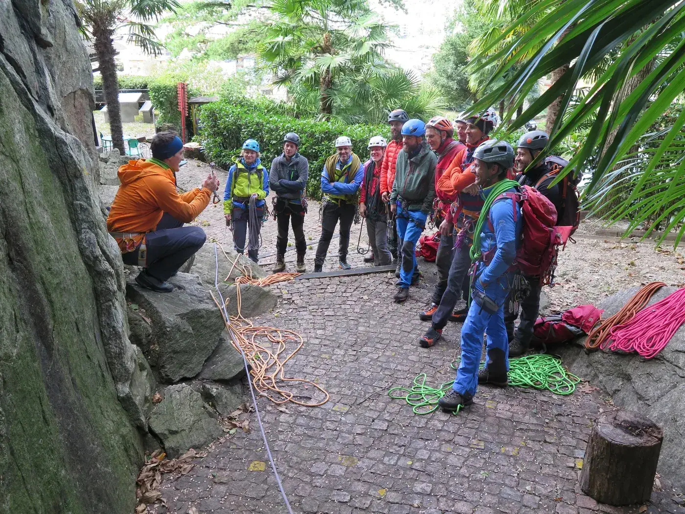
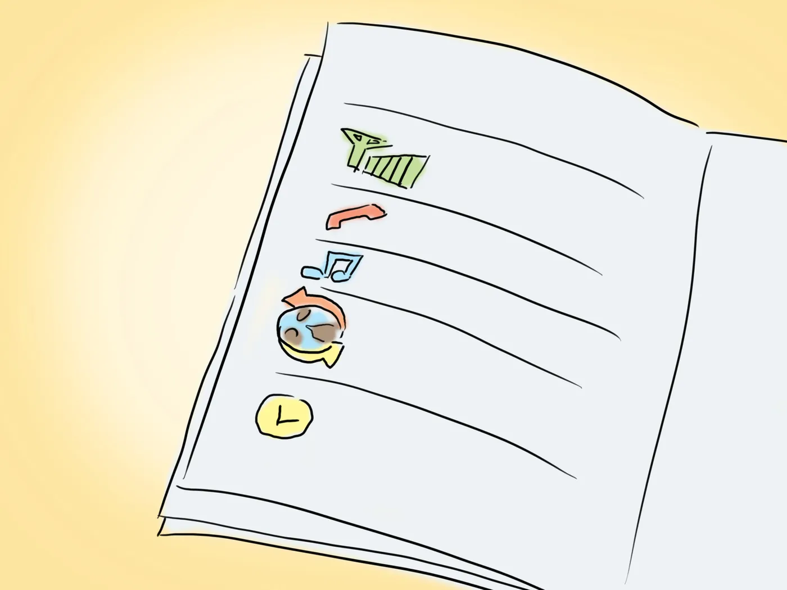
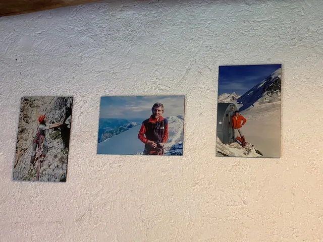
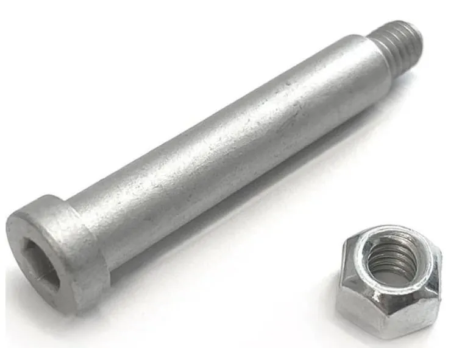

Domenica 12 giugno – Corso di aggiornamento estivo per soci

Cari soci,
vi ricordiamo il corso di aggiornamento di domenica 12 giugno, con tema:
- preparazione di una gita T4, T5, T6 fuori dai sentieri marcati – 1.5 ore
- percorso
- materiale
- realizzazione della gita
- scelta del percorso sul terreno
- passaggi esposti in terreni senza neve
- passaggi esposti in neve
Iscrizioni al link: Corso aggiornamento per soci
Autres nouvelles
Toutes les news
CAPIGITA – Manuale utilizzo DropTours
Per facilitare il compito dei capigita nell’utilizzo del gestionale gite, abbiamo creato un manuale utente indirizzato ai capigita per l’utilizzo di DropTours. Il manuale è reperibile nella sezione “Programma” del menu…

Lunedì 30 maggio alla Baita del Luca sono stati ricordati Luca Sganzini, Delio Ossola e Fabrizio Scanavino
Lunedì 30 maggio alla Baita del Luca sono stati ricordati Luca Sganzini, Delio Ossola e Fabrizio Scanavino in occasione della posa di 3 loro nuove foto alla presenza del fotografo e di qualche responsabile (o ex) della…

UPI – Avviso di sicurezza della EDELRID a proposito delle viti ad anello a D (Screw D-Ring) per attrezzatura da arrampicata, causa pericolo di caduta
UPI – Avviso di sicurezza della EDELRID a proposito delle viti ad anello a D (Screw D-Ring) per attrezzatura da arrampicata, causa pericolo di caduta Berna, 23.03.2022 – In collaborazione con l’Ufficio prevenzione…